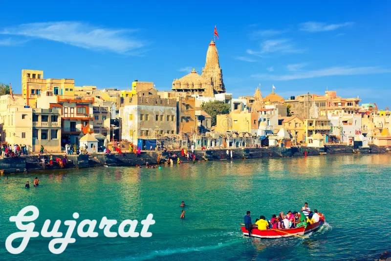

speciality of Gujarat
It is the home state of Mahatma Gandhi, the Father of the Nation. It is renowned for its beaches, temple towns and historic capitals. Wildlife sanctuaries, hill resorts and natural grandeur are gifts of Gujarat. Sculpture, handicrafts, arts, festivals also make the state rich.
Famous temple

1. Somnath Temple.
2. Swaminarayan Akshardham Temple.
3. Dwarkadhish Temple.
4. Rukmini Temple.
5. Shri Shatrunjaya Temples.
6. Sun Temple.
7. Hutheesing Jain Temple.
8. Nilkanth Dham Swami Narayan Temple.
Hill Stations

1.Saputara
2. Wilson Hills
3. Pavagadh
4. Matheran
5. Mount Abu
6. Lonavala
7. Khandala
8. Mahabaleshwar
9. Suryamal
10. Jawhar,
Toranmal and many more. There are numerous picturesque hill stations in Gujarat which are perfect for a short vacation with your friends and family.
Famous food

1.Dhokla. Gujarat's most frequently cooked and savored cuisines are the soft, spongy, and square-shaped pieces served with chutney.
2.Gathiya. Another most famous food of Gujarat that's gained popularity in different states is Gathiya.
3.Thepla.
4.Undhiyu.
5.Khandvi.
6.Jalebi Fafda.
7.Khichdi.
8.Khaman.